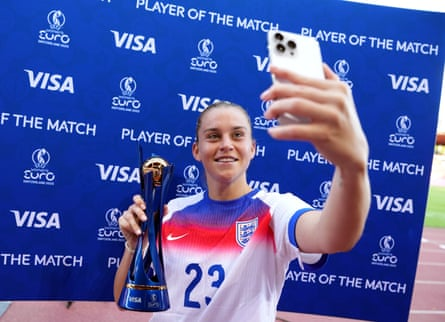

D are mention Alessia Russo was a good pick for player of the match after her three assists against the Netherlands , without an afterword on Lauren James also being superb or highlighting the performances of Jess Carter or Hannah Hampton or any of the others in an all-around strong showing, and you will be accused of being influenced by PRusso.
The not-so-witty merging of PR and the player’s name has become an insult online, used to denigrate anyone who suggests that Russo may be quite a good player. Your opinion cannot possibly be right; it’s Russo’s good PR team that has led you to believe that she is good. You have been influenced, you are a sheep, you have been blinded by the shiny Adidas adverts and the magazine cover shoots. Open your eyes, they scream into the online abyss, Russo is an average player, someone else was better, anyone else was better.
Russo does have a very good PR team. As people like to point out, her agent is her brother, Luca Russo, who is the vice-president of women’s football Europe, for the global sports, music and entertainment agency Wasserman. She is on mayonnaise bottles, the front cover of Women’s Health or Elle or GQ, she is on billboards wearing Oakley sunglasses and presenting awards at the Baftas because he is doing a good job.
But, at what point do we accept that her agents are able to do that job precisely because Russo is good at doing hers? At what point do we stop joking about and policing how women’s football players attempt to maximise their income from their short playing careers? And at what point are we allowed to just praise a player for a good performance without having to compare them with every other player who is also good and has also had a good game? When did people become, frankly, nasty?
Generational talent James would have been a worthy winner of the player of the match award after her two goals against the Netherlands in Zurich, but Russo was an equally worthy winner. Is Russo a better footballer than James? They are very different types of player, but probably not. Frankly, there are very few players in international football better than James. If awards were handed to the most technically gifted player, objectively, on any pitch there would be only one winner from each team. If that was the only criterion for the Ballon d’Or or Fifa’s The Best women’s football player award or Uefa’s women’s player of year award, there may be one winner from the start of a player’s career until their retirement, and it would probably be Aitana Bonmatí.
Alessia Russo being named player of the match after England’s win over the Netherlands led to some online questioning her ability.Photograph: Aitor Alcalde/Uefa/Getty Images
The problem too is that individual awards are slightly silly in a team sport. James would not have had her first goal without Russo, and Russo would not have had her three assists had James, Georgia Stanway and Ella Toone not converted. It is a team sport and the team award is all three points.
Against the Netherlands, Russo was brilliant, becoming the first person to make three assists in one match at the Euros. “Oh, sick,” said Chloe Kelly after that stat was relayed to her. “She’s unbelievable. On the ball, off the ball, she works so hard and yeah, she probably did deserve a goal. But three assists, I think she’ll be happy with that.”
Russo, often criticised for not scoring enough, showed why she is so much more than a goalscorer and anyone who has watched her growth since the 2022 Euros, when a backheel against Sweden in the semi-finals put her on front and back pages, will have seen how much her all-round game has grown and why she is one of the most coveted players in the WSL.
“She is a massively important player for us,” said Lauren Hemp. “She is incredible, she is so selfless. She will set players up. It is not just scoring that makes her an unbelievable player, it is the things she does off the ball as well. She creates loads of chances for everyone else. She’s a great person and we all want to see her do well. It’s mad that she hasn’t scored yet because she has contributed so much to the team winning. It’s only a matter of time until she is scoring anyway, so we won’t be having this conversation for very long.”
Russo is so valuable because of that off-the-ball work. So few centre-forwards are as effective at holding up the ball, tracking back and creating opportunities. The Arsenal player’s three assists at the Stadion Letzigrund mean she has seven goal involvements in her past seven games at the Euros.
She is very good at football. James is also very good at football. The two things can exist at the same time and we can celebrate both.